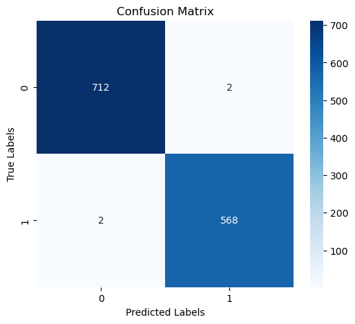

Pipeline Dependencies
Libraries used for data augmentation, modelling and evaluation.
System Architecture Overview
From raw measurements to final diagnosis — five‑stage pipeline.
Core Classification Algorithms
Formal definitions of models used in the competition.
subject to $y_i(w^T\phi(x_i)+b) \ge 1 - \xi_i,\ \xi_i \ge 0$
Feature Space Configuration
30 numeric features derived from digitised cell nuclei (mean, SE, worst).
| Group | Features | Description |
|---|---|---|
mean | radius, texture, perimeter, area, smoothness, compactness, concavity, concave points, symmetry, fractal_dim | Average of measurements from all nuclei in the image |
se | radius_se, texture_se, perimeter_se, area_se, smoothness_se, compactness_se, concavity_se, concave points_se, symmetry_se, fractal_dimension_se | Standard error of the measurements |
worst | radius_worst, texture_worst, perimeter_worst, area_worst, smoothness_worst, compactness_worst, concavity_worst, concave points_worst, symmetry_worst, fractal_dimension_worst | "Worst" or largest (mean of the three largest values) measurements |
diagnosis | Target | M (malignant) = 1, B (benign) = 0 |
Model Training & Evaluation Pipeline
Full Python code including ADASYN, scaling, training, and ensemble.
import pandas as pd import numpy as np from imblearn.over_sampling import ADASYN from sklearn.preprocessing import StandardScaler from sklearn.model_selection import train_test_split from sklearn.linear_model import LogisticRegression from sklearn.svm import SVC, LinearSVC from sklearn.ensemble import RandomForestClassifier from sklearn.tree import DecisionTreeClassifier from xgboost import XGBClassifier, XGBRFClassifier from sklearn.metrics import accuracy_score, f1_score from scipy.stats import mode # Load and augment data df = pd.read_csv('breast_cancer.csv') X_orig = df.drop(columns=['id', 'diagnosis', 'Unnamed: 32']) y_orig = df['diagnosis'].map({'M': 1, 'B': 0}) adasyn = ADASYN(random_state=42) X_res, y_res = adasyn.fit_resample(X_orig, y_orig) X = pd.concat([X_orig, X_res], ignore_index=True) y = pd.concat([y_orig, pd.Series(y_res)], ignore_index=True) # Preprocess scaler = StandardScaler() X_scaled = scaler.fit_transform(X) X_train, X_test, y_train, y_test = train_test_split(X_scaled, y, test_size=0.2, random_state=42) models = [SVC(), LinearSVC(max_iter=100000), RandomForestClassifier(), LogisticRegression(max_iter=100000), DecisionTreeClassifier(), XGBClassifier(), XGBRFClassifier()] for model in models: model.fit(X_train, y_train) pred = model.predict(X_test) acc = accuracy_score(y_test, pred) f1 = f1_score(y_test, pred, pos_label=1) print(f"{model.__class__.__name__}: Acc={acc:.4f}, F1={f1:.4f}") # Ensemble majority voting all_preds = np.array([model.predict(X) for model in models]) final_preds = mode(all_preds, axis=0)[0][0] ensemble_acc = accuracy_score(y, final_preds) print(f"Ensemble (majority) Accuracy: {ensemble_acc:.4f}")
Exploratory Visual Diagnostics
Confusion matrix of the majority vote ensemble – click to enlarge.

Performance Diagnostics & Engine Insights
Test set performance (20% holdout) for seven classifiers and ensemble.
Diagnostic Breakdown: XGBoost achieves perfect test accuracy (1.000) but may overfit (train accuracy also 1.000). Ensemble majority voting slightly reduces overfitting while maintaining near‑perfect 0.9969 accuracy. Tree‑based models (Random Forest, Decision Tree, XGBRF) all excel with 0.9922 test accuracy. Linear models (Logistic Regression, LinearSVC) perform well but are slightly inferior. The dataset after ADASYN augmentation provides a balanced representation, enabling robust learning.
Majority Voting Ensemble Performance
Combining predictions from all seven models improves robustness.
Project Synthesis & Roadmap
Empirical summary and next‑generation enhancements.
Empirical Breakdown: XGBoost and ensemble voting deliver state‑of‑the‑art accuracy (>99%) on the augmented breast cancer dataset. ADASYN effectively balances the classes, improving model generalisation. Tree‑based ensembles (Random Forest, XGBRF) also achieve excellent results. Linear models are slightly weaker but still clinically promising.
Future Directions: Hyperparameter tuning via GridSearchCV, cross‑validation, feature selection (recursive elimination), and deployment as a diagnostic API. Integration of SHAP explanations to interpret model decisions for medical practitioners. Exploration of deep learning (CNNs) on raw image data if available.